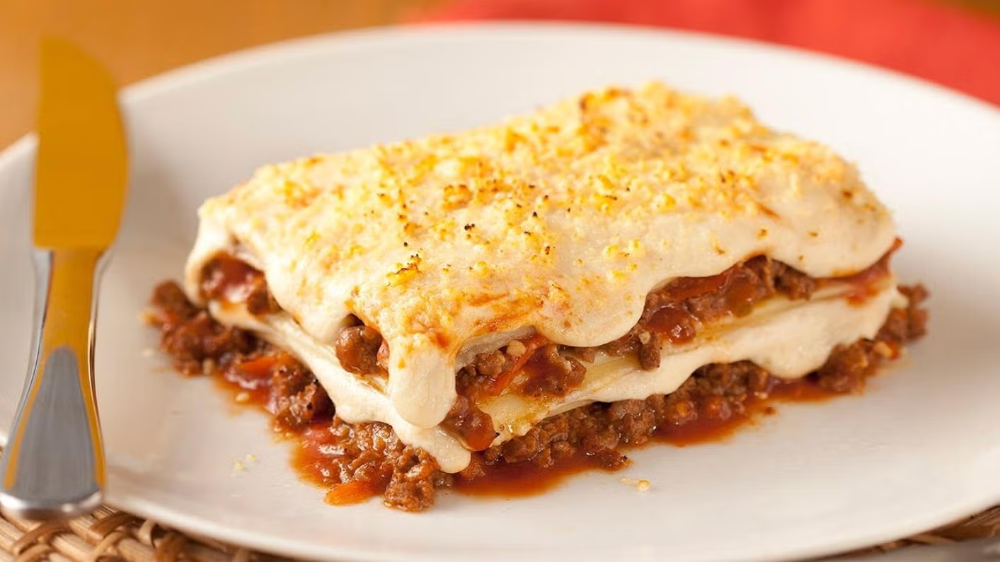

Lasanha

Descrição
Receita de Lasanha à Bolonhesa cremosa, deliciosa e irresistível, feita com molho bolonhesa, molho branco cremoso, carne moída, cenoura, salsão, purê de tomate, Leite Líquido NINHO Forti+ Integral, queijo parmesão ralado e muçarela. Uma refeição reconfortante, perfeita para almoços especiais ou jantares em família.
Ingredientes
- Lasanha
- 5 litros de água
- 2 colheres (sopa) de sal
- meio quilo de massa para lasanha
- Molho bolonhesa
- 2 colheres (sopa) de óleo
- meio quilo de carne moída
- 1 cenoura pequena ralada
- 1 colher (sopa) de salsão picado
- 1 tablete de MAGGI® Caldo Carne
- 1 lata de purê de tomate
- 1 xícara (chá) de água
- Molho branco
- 2 colheres (sopa) de manteiga
- 1 e meia colher (sopa) de farinha de trigo
- meio litro de Leite Líquido NINHIO® Forti+ Integral
- meia colher (chá) de sal
- 1 pitada de pimenta-do-reino
- 1 pitada de noz-moscada
- 1 caixinha de NESTLÉ® Creme de Leite
Montagem
- 2 colheres (sopa) queijo parmesão ralado
- 250 g de queijo muçarela fatiado
Modo de preparo
- Lasanha
- Em uma panela, leve ao fogo 5 litros de água com o sal.
- Quando iniciar fervura, cozinhe a massa fresca ou massa seca de lasanha até ficar “al dente”.
- Em seguida, com o auxílio de um escorredor, escorra toda a água e reserve a massa.
- Molho Bolonhesa
- Em uma panela grande, aqueça um fio de óleo vegetal em fogo médio. Adicione a carne moída e refogue até que esteja bem dourada, mexendo de vez em quando para que ela fique bem soltinha e ganhe sabor.
- Em seguida, acrescente a cenoura ralada e o salsão picado, e continue refogando até que os vegetais estejam levemente dourados.
- Adicione o MAGGI Caldo de Carne e misture bem para garantir que o tempero se dissolva completamente.
- Em seguida, acrescente o purê de tomate e a água, mexendo até obter uma mistura homogênea.
- Deixe o molho ferver em fogo baixo, e cozinhe por cerca de 15 a 20 minutos, mexendo ocasionalmente, até que o molho esteja bem apurado e espesso.
- Molho branco
- Em uma panela média, derreta a manteiga em fogo médio até que ela fique completamente líquida. Quando a manteiga estiver derretida, adicione a farinha de trigo e mexa constantemente para que ela cozinhe uniformemente, criando um roux dourado, que ajudará a engrossar o molho.
- Adicone o o Leite Líquido NINHO Forti+ Integral morno, em um fio contínuo, enquanto mexe para evitar que se formem grumos.
- Tempere com sal, pimenta-do-reino e um toque de noz-moscada ralada. Mexa bem até que todos os temperos se incorporem completamente ao molho.
- Quando o molho branco atingir uma consistência cremosa e suave, retire a panela do fogo.
- Em seguida, adicione o NESTLÉ Creme de Leite. Misture bem para que o creme se integre totalmente ao molho, deixando-o ainda mais rico e aveludado. Reserve até o momento de usar.
- Montagem
- Em uma forma refratária retangular grande (aproximadamente 22 x 35 cm), previamente untada com óleo ou manteiga, coloque uma camada generosa do molho bolonhesa no fundo, espalhando uniformemente para cobrir toda a base da forma.
- Em seguida, disponha uma camada de massa de lasanha sobre o molho, ajustando para que as camadas fiquem bem distribuídas. Sobre a massa, adicione uma camada do molho branco cremoso, espalhando de maneira homogênea.
- Polvilhe com queijo parmesão ralado para dar um toque de sabor e crocância, e em seguida distribua por cima fatias de queijo muçarela.
- Repita o processo, alternando camadas de molho bolonhesa, massa de lasanha, molho branco, queijo parmesão e muçarela, até atingir a borda da forma. Certifique-se de que a última camada seja de molho branco e queijo parmesão ralado, garantindo um gratinado dourado e saboroso.
- Repita as camadas até a borda do recipiente.
- Leve a lasanha ao forno preaquecido a 200ºC por cerca de 20 a 25 minutos, ou até que o topo esteja dourado e borbulhante, com o queijo derretido e levemente crocante.
- Retire do forno e deixe descansar por alguns minutos antes de cortar e servir, para que as camadas se firmem e a lasanha fique mais fácil de porcionar. Sirva!
Home